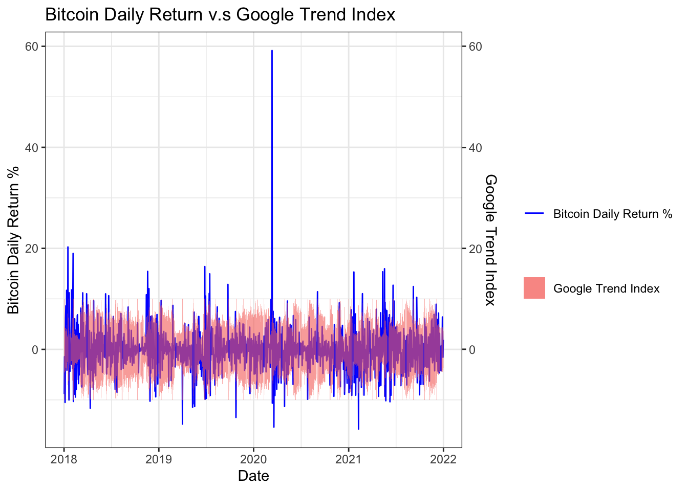
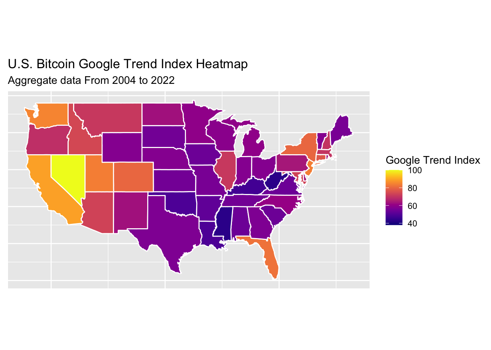

Chapter 5 Results
5.1 Market Cap
We want to compare the market cap of the traditional stocks with the cryptos, so we get the Wilshire 5000 Total Market Full Cap Index at the end of each month as the measurement of the market cap of the traditional stocks and make the following plot.

The market cap of the cryptos and traditional stocks basically follow the same trend in recent years, while the market cap of the cryptos expanded more rapidly. This leads us to the next question, what cryptos dominate the trend and how the internal structure of cryptocurrencies has changed.

From the previous plot we know that The market capitalization ratio of cryptocurrencies has changed dramatically over the past few years.

From the market cap mosaic plot we can find out that the total market cap of cryptocurrencies expand rapidly in year 2017 and
The plot above shows the progress of crypto’s market capitalization over the recent years. it is interesting to see that in the early years ADA and XRP shared a significant amount of crypto’s market capitalization.
As Bitcoin has grown in popularity over the years, its market cap has increased many times over.
However, in 2021 more and more other new cryptocurrency emerged and many new cryptos other than traditional ones, like BTC, ETH and XRP , had a significant market capitalization.
5.2 Price v.s Price
OHLCV is an aggregated form of market data standing for Open, High, Low, Close and Volume. OHLCV data includes 5 data points: the Open and Close represent the first and the last price level during a specified interval. High and Low represent the highest and lowest reached price during that interval.
From our data source(Yahoo Finance), we can get the daily OHLCV data of each cryptocurrency and traditional stocks. So in this chapter, we want to explore the price changing relationship between traditional stocks and cryptocurrencies.
5.2.1 Among Cryptocurrencies
Bitcoin, Ethereum, XRP are top three cryptocurrencies with the highest market cap at the end of 2021, so we choose these three coins to represent cryptos. We will use their daily closing price between 2018 and 2021 to explore their relationship.
In order to show the closing price relationship among different cryptos more clearly, we have do some scaled transformation on data.

From the Feature Cryptocurrencies Daily Closing Price plot, we can clearly find out that there is significant relationship among each crypto’s daily closing price. We also find out the relationship seems changed in 2020.
To dig deeper on their relationship, we generate a pair scatter plot and colored the data point by the year.

The pairs scatter plot give us very interesting result that these three cryptos’ daily closing price basically follows linear relationship with each other and the slope of the linear relationship line is changed at the begining of 2020. Before 2020, XRP closing price is higher than that after 2020 with the same ETH or BTC price.
We can conclude from the pair plot that before 2020, XRP is overvalued. And after 2020, BTC may be overvalued.
5.2.2 Cryptos v.s stocks
Nowadays, cryptocurrencies have also become an investment target. Therefore, cryptocurrencies have replaced the status of traditional investment targets to a some extent.So we want to explore the relationship between the closing price of cryptocurrencies and the closing price of traditional stocks.
We will use NASDAQ 100 Index and Dow Jones Industrial Average as the measurement of the pricing change of the traditional stocks. We will use BTC and XRP to represent cryptos as based on the discussion above, they basically represent two stage of crypto’s pricing change.

From the plot we can conclude that both the cryptocurrency, represented by Bitcoin and ETH, and the traditional financial assets, represented by the Nasdaq 100 index and DJI, their financial yield sequence of have the characteristics of peaks and thick tails, and the rate of return and volatility of encrypted cryptocurrency is greater after 2020.
5.3 Price v.s. Google Trend
Social media and news play an important role in driving the fluctuation of economic indicators and financial markets in a nontrivial fashion. Therefore, it is not surprising that the rapid development of cryptocurrency has attracted increasing attention from news and social media.
In this part, we introduce Google trend as the measurement and perform preliminary data exploratory method to discuss its relationship with cryptos(BTC) pricing change.

The plot shows that there is a certain lag between the popularity on social media and the daily return of cryptocurrencies. Generally, the Google Trend index will increase significantly a few days after days when Bitcoin fluctuated violently.
5.4 Google Trend v.s State
Who are more interested in cryptos? This is also an interesting questions, as the transactions of Cryptocurrency are anonymous, we cannot obtain information about traders. So we will use Google Trend Index to get the demography characters of the people who are interested in cryptos.

It is understandable that states such as California, Washington, and New York , which are economically developed, and where the Internet and financial companies gather, show a high interest in Bitcoin. But it’s surprisingly to see that people in Nevada are the most ardent fan of Bitcoin.
By searching some information, we believe this result is due to Nevada’s easing policy on cryptocurrencies. Nevada became the first state to ban local governments from taxing blockchain use when it enacted Senate Bill No. 398, which established various provisions relating to the use of blockchain technology.